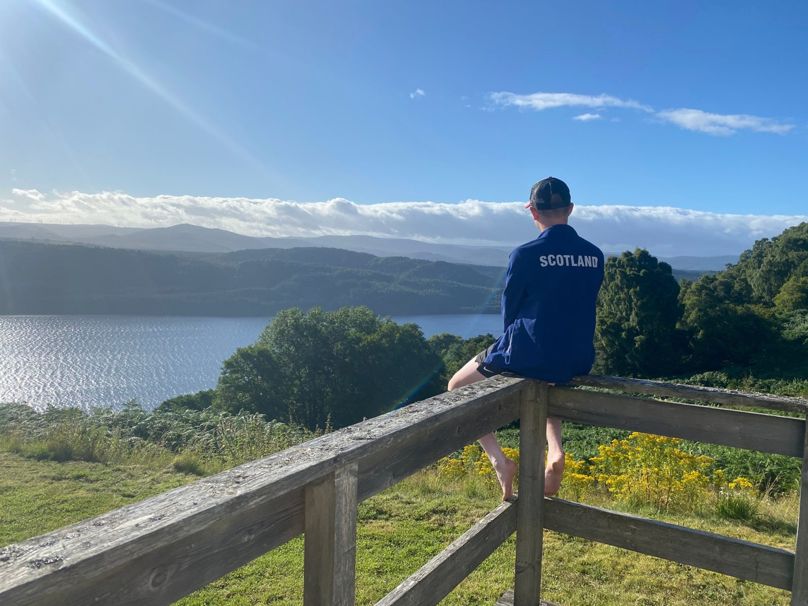

About Me
A Scot a long way from home.
Where I come from, how living abroad has changed me, and what I carry with me wherever I go.
Where I'm from
I was born and raised in Perth, Scotland, a city on the River Tay with the Highlands right on its doorstep. I love my country. The mountains and landscapes are some of the most beautiful anywhere, and the people are the warmest and most down-to-earth I've met. Wherever I go, Scotland comes with me.

Quick facts
- Age20
- FromPerth, Scotland
- StudyingBusiness
- UniversityBellarmine University
- SportDivision I tennis
Moving across the world
At eighteen, I left home for the United States on a tennis scholarship. Living in a new country has meant adapting to a new culture, a new routine, and a new university, and I have since moved from UNC Asheville to Bellarmine University. Starting over more than once taught me to adapt quickly, to be comfortable being uncomfortable, and to build relationships from scratch.
My family
None of this would be possible without my family. They have supported me through the early mornings, the long journeys to tournaments, and the decision to move across an ocean to chase my goals. Their encouragement and sacrifices are a big part of every result I've achieved, and they are never far from my mind, even from thousands of miles away.
What Scotland taught me: Scotland taught me to be humble, work hard, and treat people well. It also taught me that where you come from shapes who you become, and that you can carry that anywhere.